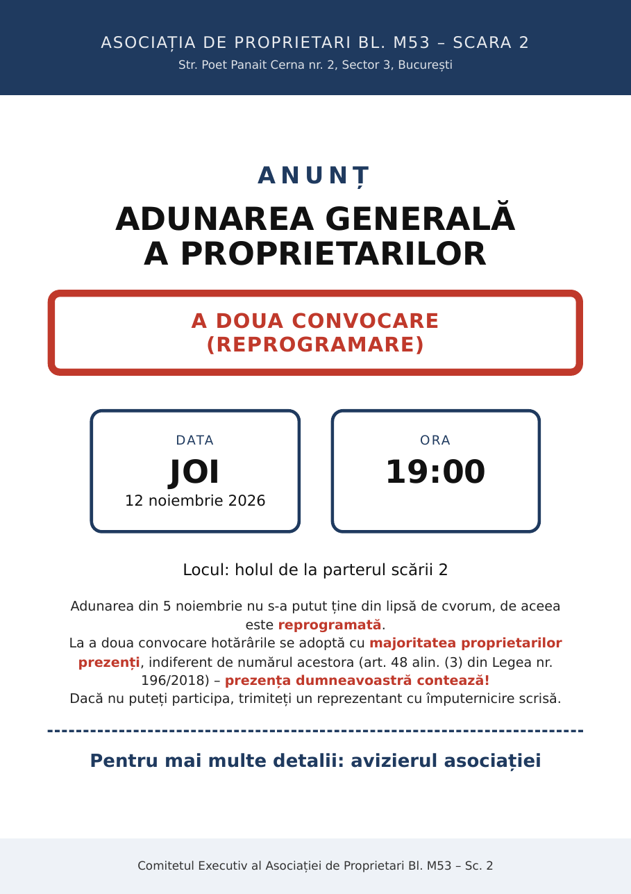

Asociația de Proprietari Bl. M53 – Sc. 2
Adunarea Generală · 05.11.2026, ora 19:00 (reconvocare 12.11.2026)
← Toate documentele
Deschide PDF
Tipărește
Document 26 · Adunarea reconvocată – 12.11.2026 · versiune pentru vizualizare – nu se editează online
